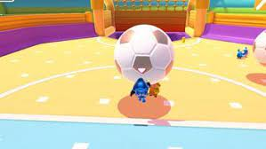

Mini Games
Hex-A-Gone

One of the mini games in fall guys is "Hex-A-Gone."The goal of the game is to not fall off the entire series of
platforms and try to be the last one "alive." In the beginning of the minigame as people run along platforms pieces
of the platform breakdown so its harder to run, longer time goes by. For Hardcore Minecraft players this should sound
SUPER familiar. Because it's it resembles Mincrafts minigame "TNT RUN." If you had played tnt run before
this minigame should be really easy to play on.
Fall Ball

Fall Ball is a team based minigame in Fall Guys. Its exactly like playing soccer but instead the soccer ball
is like a beach ball as seen from the picture above.